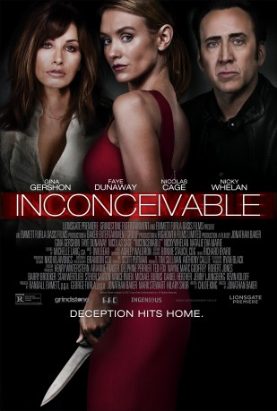
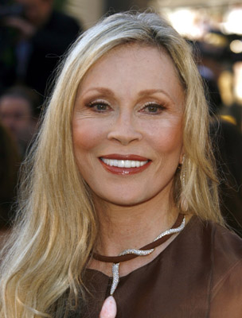
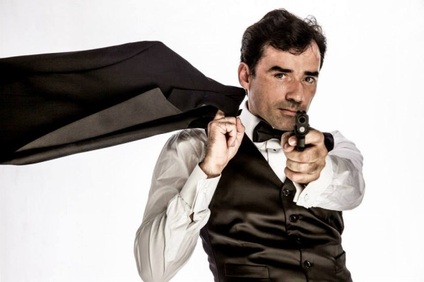

#8080 Tödliches Verlangen
 
 IMDB-Wertung: 5.2 / 10
IMDB-Wertung: 5.2 / 10  Metascore: 0
Metascore: 0 
A mysterious young woman, Katie (Nicky Whelan), and her daughter move to a new town to escape her past and quickly befriends Angela Morgan (Gina Gershon), a mother of one who longs for a bigger family. As their lives become intricately entwined, Angela and her husband, Brian, (Nicolas Cage), invite Katie to live in their guest-house to serve as their nanny. Over time, the blossoming friendship between the two women spirals into a dangerous obsession as Katie becomes overly attached to the Morgans' daughter. Enduring lies and manipulations, Angela and Brian realize that sweet Katie is actually trying to destroy their family from within.
Jahr: 2017
Dauer: 105 Minuten
FSK: 12
Land: Kanada Studio: DFWTonspuren: DTS - ,
Untertitel: Deutsch,
Auflösung: 1080p (1920x808) Größe: 4864 MB
Genre: Thriller, Drama
Regisseur: Jonathan Baker
Drehbuch: Chloe King
Soundtrack: Kevin Kiner
Darsteller:
 Gina Gershon als Angela
Gina Gershon als Angela Nicky Whelan als Katie
Nicky Whelan als Katie Nicolas Cage als Brian
Nicolas Cage als Brian- Natalie Eva Marie als Linda
-  Faye Dunaway als Donna
- Jonathan Baker als Barry
- James Van Patten als Dr. Weisman
 Ele Bardha als Jake
Ele Bardha als Jake- Hunter Bodine als Dr. Holland
- Leah Huebner als Mother
- Corrie Danieley als Monica Wheeler
- Tyler Jon Olson als Anesthesiologist
- Pernille Trojgaard als Nurse #2
-  William Willet als Yoga Dad (uncredited)
- Sienna Soho Baker als Maddie
- Harlow Bottarini als Cora
- Burgess Byrd als Nurse
- Tess Talbot als Mrs. Reynolds
- Nicholas Lynch als Nick
- Dylan Keith Adams als Male Nurse (uncredited)
Datei: X:\2017(N-Z)\Tödliches Verlangen (2017, FSK12, 1920x808).mkv seit 21.01.2018
Festplatte: HD 2017(A-Z)-2018(A-F)
 Es gibt insgesamt 170 Filme in der Gruppe '2017(N-Z)'
Es gibt insgesamt 170 Filme in der Gruppe '2017(N-Z)'